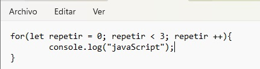
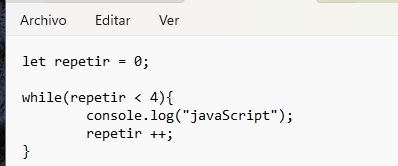
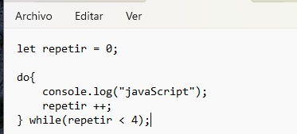

BUCLES.
Este tema ya lo conocen , así que nos saltaremos la explicacióntécnica e iremos directamente a la sintaxis de javaScript
FOR
- se escribe la palabra "for" seguida de un par de paréntesis y un par de llaves: for(){}
- dentro de los paréntesis irá la variable (que podremos declarar dentro también) con su inicialización y punto y coma para cerrar
- repetimos la variable con la condición y cerramos con punto y coma
- repetimos la variable con l incremento o decremento
for(let variable = 0; variable > 10; variable++)
(si es decremento se usa --)
como siempre, un ejemplo es mejor que mil teorías
Construyamos un programa que muestre en pantalla la palabra javaScript tres veces

WHILE
es parecido a "for" en cuanto a funcionalidad, cambiando ligeramente su estructura. Primero la variable se declara fuera, con su valor inicial, en la siguiente línea se escribe la palabra reservada "while" y entre paréntesis la condición; finalmente un par de llaves dentro de las cuales escribiremos nuestro programa
var variable = 0; while(variable (operador) condición ){programa; variable++}
construiremos el mismo programa que repite la palabra javaScript tres veces

DO WHILE
el bucle do while cambia la estructura y el uso. En este caso, también se declara la variable fuera y luego se escribe la palabra reservada "do", seguida de un par de llaves con nuestro programa dentro y, finalmente y fuera de las llaves, la palabra reservada "while" seguida de un par de paréntesis con la condición dentro.
la particularidad de este bucle es que el programa se ejecutará al menos una vez, aunque sea la condición falsa
claro que volveremos a construir el programa que repite javaScript tres veces
